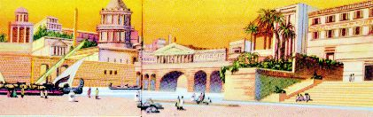
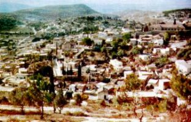
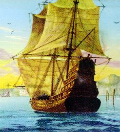

Era
un dáa soleado, con el cielo completamente azul, sin nubes y con una brisa suave
que perezosamente 
Una sonrisa ancha ocupaba su semblante y su corazón alegre brincaba como niño transverso, que siente el prenuncio de la emoción de encontrar las personas amadas.
Desembarcó el equipaje y alquiló un coche para llevarlo a Taormina. La carretera estaba tranquila y se delineaba sinuosamente, entre los inmensos muros rocosos y varias plantaciones, por veces serpenteaba las vertientes prójimas al mar, o haciendo zigzag en los cuencas, escapando de las depresiones y librándose de los abismos, pasando por las ondulaciones de las colinas, en las arenas de las cuestas y disfrutando del bonito y consolador paisaje marino.
En lo trayecto sélo se oía el trotar ligero de los caballos y las voces del conductor y de Longinus que con curiosidad querría conocer todas las noticias refiriéndose a sus amigos y a los eventos en su ciudad. Una gran felicidad le envolvía el espíritu por estar regresando a la patria.
Acercándose de la ciudad, algunos vecinos viendo de pequeña distancia luego fue conocido y vinieron salúdalo y se acercaban a abrazarlo. Era estimulante, después de tanto tiempo, hablar y oír las novedades de su tierra y encontrar sus amigos.
Llegaron a casa y él entró repleto de alegría. Allí, con los parientes y amigos, asentaran se al rededor de una mesa y entre sonrisas y carcajadas, intercalados por copas y copas del delicioso vino del señor Francesco, quedaran un bueno tiempo “matando los anhelos" y poniendo en dáa los eventos mês importantes que se pasaron en cinco años de ausencia. Y, de repente, las noticias de Juliana aparecerán... Taglivine el padre de la muchacha, hay pasado serias dificultades en el negocio. Quedá enfermo de tanto trabajar y como ya estaba con el organismo debilitado, vino a morir. Su esposa y la hija vendieron el negocio y fueron a Licaúnia, en una propiedad vinícola que pertenecía a Orlando Taglivine, hermano de su padre.
Longinus quedá frustrado con la información, porque ha entendido que no seráa de este tiempo que se encontraría con Juliana y también lamentó la muerte del señor Antonio Taglivine, porque tenía grande amistad por él. Continuaran hablando sobre varios asuntos y bebiendo mucho vino, mas, a bien de la verdad, a partir de aquello momento, el corazón de Longinus quedá triste. En medio de las charlas y gracejos, la sonrisa fue marchitándose en sus labios, hasta no resistiendo la decepción, dio una excusa trivial y se levantó. Fue al encuentro de su padre que estaba en la labora.
Fue un encuentro efusivo y lleno de calor. Padre y hijo se abrazaran con mucho cariño y después hablaron animadamente durante un largo tiempo. Tuvieran también la oportunidad de hacer recuerdos de hechos pasados y chistes, haciendo chacotas que provocaran sonrisa en ambos, revelando la grandeza del amor y la amistad afectuosa que los unía. Concluido el trabajo, ellos regresaron a casa.
En la noche, echado en la cama, sus pensamientos caminaban libres como en una película de filme, se sucedáan rápido en su mente. Ligeramente alcoholizado, tentó reorganizar los planes, revendo las pasajes y imaginando soluciones para el futuro. Había recibido autorización para estar ausente durante 60 dáas. De Cesaría hasta Messina eran 25 dáas de nave que, naturalmente, será el mismo tiempo en su retorno, y todavía, hay que ser tomado en consideración el tiempo de espera del próximo embarco destinado a Cesaría que sélo pasaría después de 6 dáas según la información que consiguió en Messina. Entonces, mismo que quisiese no tenía tiempo a visitar Juliana en Listra. Conformado con la realidad, trató de vivir de la mejor manera el tiempo disponible, celebrando el reencontró con sus parientes y amigos.
En el dáa anterior del retorno
a Judea, subió una colina que se eleva bien delante de la ciudad. Allí en cima
la 
El "sagum", (la capa roja del centurión), temblaba al viento, como si fuera una bandera al sabor de la brisa. Al derredor se extendáa una vegetación baja, con pocos árboles dispersados y muchos bloques de piedras desparramados por todas las partes.
¿Longinus, sentó en una de las piedras y continuó a disfrutar de aquella linda visión, admirando el formato de las nubes, la incidencia de los rayos solares y empezó a imaginar quién había hecho toda aquella maravilla?
¿Como la naturaleza había se formado?
Estaba absolutamente claro, que cualquier hombre, por mês perfecto que fuese la persona, mês sabia e inteligente, ninguno ser humano tenía cualquier tipo de participación en este trabajo, porque también los seres humanos viven dentro de la propia naturaleza, pensaba él consigo.
¿Pero, entonces, quién hizo todo esto universo?
Una pregunta que lleva cualquier persona a origen de la vida... E tentando raciocinar, soltándolos lazos que retiene la imaginación, fue siendo manejado por su mente hasta la presencia del CREADOR. E entonces puede concluir: todo esto es Obra de un DIOS maravilloso, repleto de bondad, lleno de Amor y rico en Misericordia, que crió la Humanidad, todos los pueblos, las personas y las generaciones, propiciándolos las delicias y encanto de Su Reino, la belleza y la grandeza de Su Divino poder.
Entonces él sintió que aquello era el momento correcto para hablar con DIOS, para decirle un poco de sí mismo, de sus angustias, de sus anhelos, de sus problemas y de sus debilidades, aunque entendáa que ÉL lo conocía muy profundamente y que sus palabras no eran necesarias a revelar su persona. Aun así, sintió que ése era el momento favorable para pedir perdán e implorar la piedad y misericordia Divina. Por eso, se colocó de pie y uniendo las manos miró el infinito, hablando una frase suplicante:
"SEÑOR DIOS todo poderoso, perdone mi audacia. Yo no sé si es correcto hablarle estas palabras. Sin embargo, perdáneme y por favor óigame. USTED sabe que cuando yo atravesé el Cuerpo de JESÚS con mi lanza, estaba ejecutando una misión de soldado, no lo conocía y ni tenía odio en mi corazón. Ahora yo sé que ÉL es Su muy estimado HIJO, el HIJO DE DIOS, por eso, vengo pedir perdán de mi gran ofensa, quiero con humildad, suplicar la grandeza del Amor y de la Misericordia del SEÑOR, mientras yo no imagino que sea digno de ninguno de las dos. Yo apenas invoco por la Sangre precioso que yo ayudá a derramar en la Cruz, y que realmente, ahora yo sé que aquello Sangre fue derramado en beneficio de toda la Humanidad y, por consiguiente, también fue derramado misericordiosamente en beneficio de mi pobre y humilde persona. En segundo lugar SEÑOR, yo invoco por Su terrible y cruenta Pasión, que calladamente sufrió como demostración de obediencia al SANTO PADRE ETERNO y por Amor infinito a la humanidad de todas las generaciones, a la cual yo también pertenezco. Por eso SEÑOR, por Su gloriosa y preciosa Resurrección, yo pido el perdán por mis muchos pecados y yo le suplico SEÑOR, tenga piedad de mí, de mi vida y de mi pobre alma."
Bajó la cabeza y quedá en silencio. De ojos
cerrados permaneció pensando en aquéllos éltimos e importantes 
Con las lágrimas de agradecimiento en sus ojos, bajó la colina y regresó a la casa.
El dáa siguiente viajó a Jerusalén.